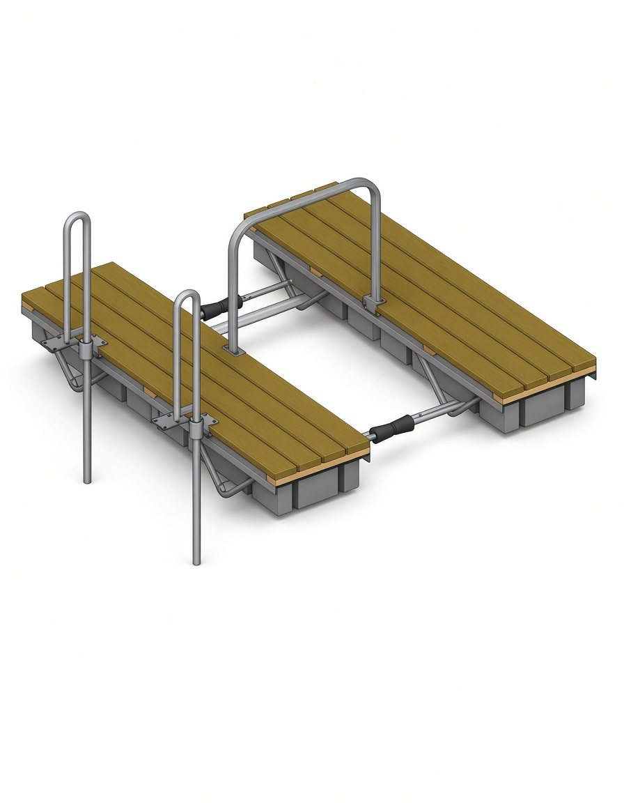
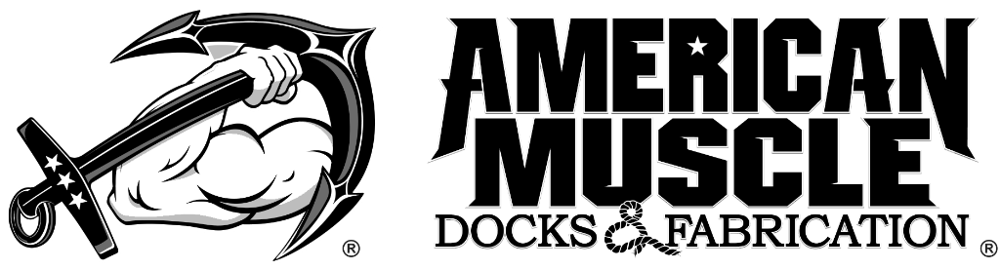
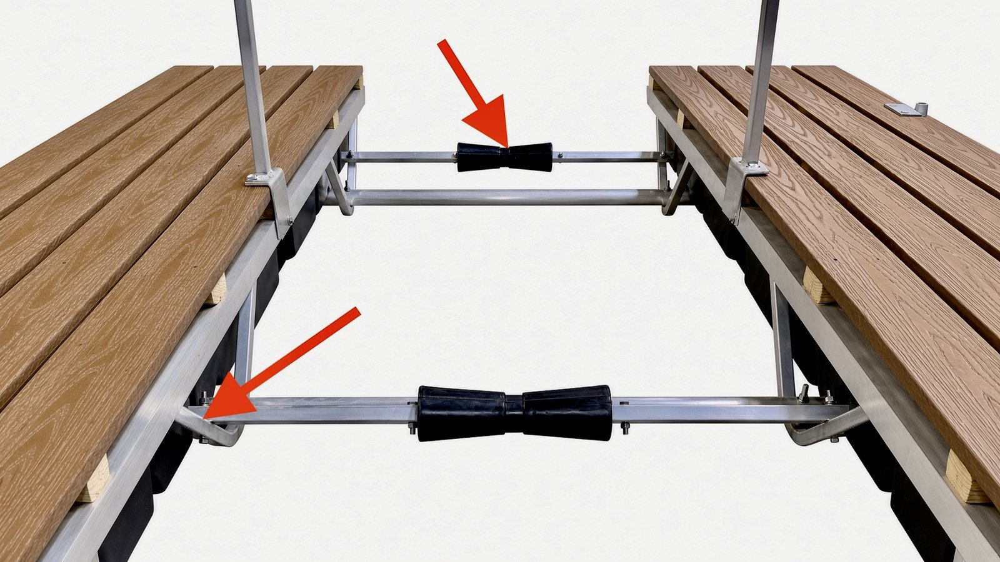
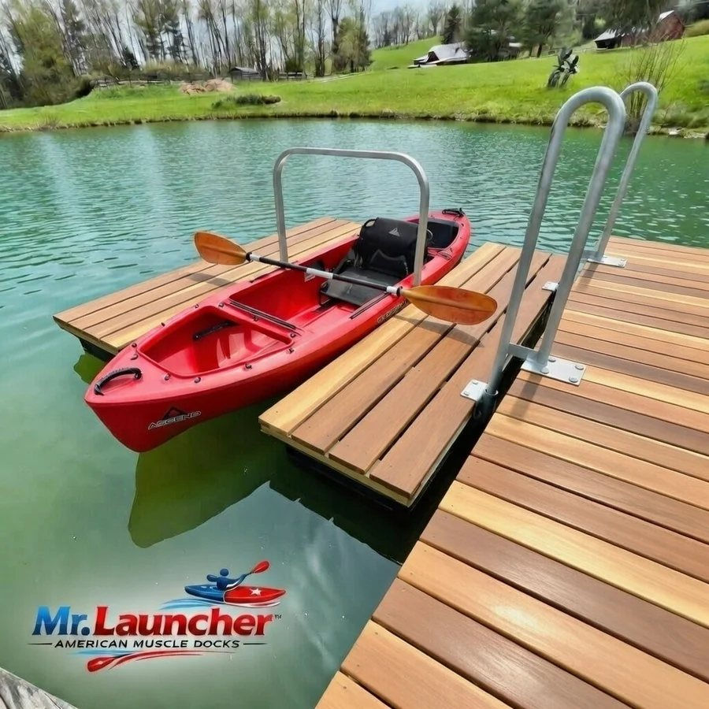

MR. LAUNCHER 2.0
KAYAK DOCK
INSTALLATION MANUAL


INSTALLATION MANUAL

THANK YOU for purchasing a Mr. Launcher 2.0 Kayak Launch!
Please read all directions and watch the help videos before you begin.
Help videos: youtube.com/@amdocks
More images and information: www.AmericanMuscleDocks.com
This residential launch is intended to be an accessible way to enter and exit your kayak more easily.
This residential kayak launch is not intended to be a floating dock and should be used by one person at a time. Follow the directions for proper & safe installation.

Grease the 3/8 x 4” stainless bolt threads when installing the pipe supports.
Attach The Aluminum Pipe Supports
PAGE 5 2Attach The Sq. Tube Stabilizers
PAGE 6 3Install The Aluminum Grab-Bar
PAGE 7 4Mount The Kandy Kane Receivers
PAGE 8
** Pre-drilled holes are already in the aluminum V where most kayaks sit best on the rubber rollers. Some kayak bottoms are made differently and may require new holes drilled to move this bracket either up or down. The correct resistance should be enough to allow you to get in and out of your kayak without the kayak wanting to move too much. We set the holes to the most common height suitable for most kayak bottoms – allowing the rollers to hold your kayak without it floating away when docked.

Place the aluminum grab-bar in the very center of the inside of the two floating platforms. There are pre-drilled holes on the top and bottom of the grab-bar (match these to the pre-drilled holes in the platforms). If the holes do not line up exactly, you may have to loosen some of the bolts for the aluminum pipe supports / square tube stabilizers you installed.

Mount the pipe receivers onto your floating dock section - Straddle the outside 2x4” sleeper board so that board fills the void between the decking and the aluminum frame or use a 2x4” block to fill the void under the bracket.
PIPE RECEIVERS - Use (2) 3/8 x 4” carriage bolts per mount, from the top down. * Drill these holes on a slight angle towards the outside of the dock (Don’t worry if you hit the float mounting flange). Use (1) 3/8 x 1 ¼” carriage bolt on the side face per mount.
DECK BRACKETS - Lay out where you want to drill and attach the Kandy Kane deck brackets to your other permanent structure each with (4) 1/2 x 3” carriage bolts. Mount the plate as far out to the edge of the decking as possible so there is a gap between the pipe and your decking (this gap ensures the pipe holders on the kayak launch can move up the pipe without getting stuck between your dock).





Tap or click any image to open it full screen. The dimension drawing reads best enlarged.